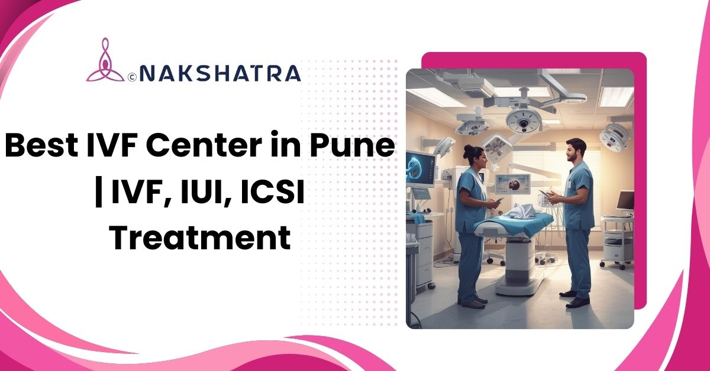

Your Struggle Ends Here at the Best IVF Center in Pune with 70% Success Rate
Looking for a trusted IVF clinic in Pune known for ethical practices and high success rates? Our fertility experts use advanced IVF techniques to deliver outcomes you can trust.

Accessible from Baner, Wakad, Hinjewadi, PCMC and nearby areas
Book Free Consultation
Dr. Ramit Raosaheb Kamate
MBBS , DNB, DGO, FRM (UK)
Dr. Ramit Kamate is a Reproductive Medicine Consultant and Sexologist with experience of 12+ years. He specialises in Sexual Medicine for male and female, Fertility Treatment, Pre and Post Delivery Care, Normal Vaginal Delivery (NVD), Tubectomy/Tubal Ligation, Natural Cycle IVF, MTP.
Dr. Ramit Kamate finished MBBS from B J Medical College, Pune. He pursued Master's In Reproductive Medicine from Hamilton University, UK & IBCME Dubai. Completed Fellowship in Cosmetic Gynaecology and Sexual Medicine from USA.
Schedule ConsultationStart with a clear fertility consultation
Book your appointment with Nakshatra Clinic for IVF, IUI, ICSI and fertility care in Pune.
Clinical Services We Offer
Comprehensive fertility and reproductive care options for couples across Pune.
IVF Treatment
Struggling to conceive naturally? Our IVF program gives hope to thousands of couples. We use cutting-edge lab technology and Dr. Kamate's 12+ years expertise to help you achieve your dream of parenthood with higher success rates.
Natural Cycle IVF
Prefer a gentler approach? Natural Cycle IVF works with your body's own rhythm using minimal medications. It's perfect if you're concerned about hormonal side effects but still want effective treatment with excellent pregnancy outcomes.
IUI Treatment (Intrauterine Insemination)
Looking for a simpler, more affordable first step? IUI places healthy sperm directly where they need to be during your fertile window. Many couples conceive with this less invasive option before considering IVF.
ICSI Treatment (Intracytoplasmic Sperm Injection)
Is male factor infertility your challenge? ICSI gives each egg the best chance by carefully injecting one healthy sperm directly inside. It's proven highly successful even when sperm count or quality seems discouraging.
Test Tube Baby Center Services
Curious about the complete process? We walk you through every step - from your first hormonal injection to the amazing moment of embryo transfer. You'll understand exactly what's happening and why at each stage.
Male Infertility Treatment
Gentlemen, your fertility matters too! We address low sperm count, motility issues, and intimate concerns with sensitivity and expertise. Dr. Kamate's sexual medicine specialization means comprehensive care without embarrassment or judgment throughout treatment.
Oligospermia (Low Sperm Count) Treatment
Low sperm count isn't a dead end. Through targeted hormonal therapy, lifestyle changes, antioxidant supplements, and advanced techniques, we've helped countless men improve their sperm parameters and become fathers naturally or through assisted reproduction.
Female Infertility Treatment
Whether it's PCOS, blocked tubes, or unexplained infertility frustrating you, we investigate thoroughly and treat effectively. Our personalized approach addresses your specific condition with proven medical solutions and supportive care you deserve.
PCOS Treatment & Management
Living with PCOS and irregular cycles? You're not alone, and pregnancy is absolutely possible. We combine smart medications, lifestyle guidance, and fertility treatments tailored to help you ovulate regularly and conceive successfully despite PCOS challenges.
Ovarian Drilling for PCOD Treatment
When medications aren't working for your PCOS, ovarian drilling offers hope. This minimally invasive laparoscopic procedure helps restore natural ovulation by resetting your ovarian function. Recovery is quick, and conception rates improve significantly afterward.
Low AMH Treatment
Low AMH results can feel devastating, but don't lose hope yet. We specialize in maximizing your remaining egg potential through carefully customized stimulation protocols, targeted supplements, and advanced IVF techniques that work with your biology.
Fertility Counseling & Support
Feeling overwhelmed, stressed, relationship strain? Completely normal during treatment. Professional counseling addresses emotional toll, helping cope with disappointments, make decisions, maintain mental health throughout.
High-Risk Pregnancy Management
Over 35, carrying twins, have medical conditions? You need specialized care. Close monitoring, coordinated specialists, advanced emergency facilities keep you and baby healthy throughout.
Sperm Donation Program
Severe male infertility or genetic concerns? Anonymous sperm donation from rigorously tested donors helps build family. Entire process remains confidential with counseling support provided.
Egg Donation Program
Severe male infertility or genetic concerns? Anonymous sperm donation from rigorously tested donors helps build family. Entire process remains confidential with counseling support provided.
Repeated Implantation Failure (RIF) Treatment
Severe male infertility or genetic concerns? Anonymous sperm donation from rigorously tested donors helps build family. Entire process remains confidential with counseling support provided.
Endometriosis Treatment
Endometriosis causing painful periods and infertility? We offer medical management and expert laparoscopic surgery. Combined with IVF when needed, most women successfully achieve pregnancy.
Why families trust our IVF experts
IVF Success Rate
Higher than national averages due to our advanced technology, experienced team, and personalized treatment protocols.
Successful Pregnancies
We've helped over 2000 couples achieve their dream of parenthood since 2010.
Google Rating
Rated 4.9/5 by 150+ patients who trust our expertise and compassionate care.
How Does IVF Work Step by Step?
We understand that the IVF journey can feel overwhelming. Here is a clear, step-by-step breakdown of exactly what happens during your treatment at our center.
Week 1
Initial Consultation & Assessment
The IVF journey begins with a detailed consultation where fertility evaluations for both partners are conducted, medical history is reviewed, and a personalized treatment plan is created based on individual reproductive needs.
Week 2–3
Ovarian Stimulation
Hormonal medications are prescribed to stimulate the ovaries to produce multiple eggs. Regular ultrasounds and hormone level monitoring ensure healthy follicle growth and help doctors adjust treatment for optimal results.
Day 14–16
Egg Retrieval
Egg retrieval is a minimally invasive procedure performed under anesthesia to ensure comfort. Mature eggs are collected from the ovaries and immediately transferred to the laboratory for further processing and fertilization.
Day 1
Fertilization
Collected eggs are fertilized using IVF or ICSI techniques after sperm collection and preparation. Embryologists carefully monitor fertilization and early embryo development under controlled laboratory conditions.
Day 2–5
Embryo Culture
Fertilized embryos are cultured in advanced laboratory conditions until the blastocyst stage. Each embryo is closely assessed for quality, development, and viability before selecting the best embryo for transfer.
Day 3–5
Embryo Transfer
Embryo transfer is a simple and painless procedure where the selected embryo is gently placed into the uterus. Patients receive post-transfer care instructions and supportive medications to enhance implantation success.
2 Weeks Later
Pregnancy Test
A blood test is performed two weeks after embryo transfer to confirm pregnancy. Based on the results, doctors guide patients on next steps, follow-up care, and further treatment planning if required.
Overview
IVF Process at Our Center (Video)
This video provides a step-by-step overview of the IVF process at our center, helping patients visually understand each stage of treatment, the care involved, and what to expect throughout the journey.
Convenient IVF Center in Pune – Serving Multiple Locations
Nakshatra Clinic is easily accessible to patients across Pune and nearby regions. Couples from all corners of the city trust us for world-class IVF care close to home.
What Pune families share about care
"Best IVF Experience in Pune"
We had an amazing experience at Nakshatra Clinic. Dr. Ramit Kamate is truly one of the best IVF specialists in Pune. After struggling for years, we finally conceived through IVF here. The entire team is supportive, transparent about costs, and very professional. Highly recommended for anyone looking for the best IVF center in Pune!
"Transparent Pricing & Genuine Results"
Nakshatra Clinic offers very transparent pricing and even EMI options, which made IVF treatment affordable for us. Dr. Kamate and his team are very supportive and always available for queries. One of the best IVF centers in Pune with genuine care and results.
"Wonderful IUI Experience"
I visited Nakshatra Clinic for IUI treatment and I'm very happy with the results. Dr. Kamate explained everything clearly and made us feel comfortable throughout the process. The clinic is well-equipped and staff is very caring. If you are searching for a reliable IUI center in Pune, this is the place.
"Professional & Caring Treatment"
I consulted Dr. Kamate for male infertility issues. He handled everything very professionally and without any hesitation or embarrassment. His treatment plan really improved my condition. I highly recommend Nakshatra Clinic for both male and female fertility treatments.
"Smooth & Stress-Free IVF Journey"
The entire IVF journey at Nakshatra Clinic was smooth and stress-free. The staff is very cooperative and guides you at every step. Dr. Ramit Kamate is extremely knowledgeable and gives confidence to patients. Thank you for your excellent care and support!
"Step-by-Step Guidance Made It Easy"
From consultation to treatment, everything was smooth and well-managed. The IVF process was explained step-by-step which reduced our stress. The clinic is clean, staff is polite, and doctor is very experienced. Truly the best IVF center in Pune for couples trying to conceive.
Curious About IVF? Let's Talk.
Speak with our team for clear guidance on IVF, IUI, ICSI and fertility treatment options in Pune.
The best IVF center in Pune is one that offers advanced fertility treatments, experienced IVF specialists, high success rates, and personalized care. Leading clinics like Nakshatra Fertility Clinic are known for ethical treatment and patient-focused IVF solutions. They provide the best treatments such as IVF, IUI, ICSI, fertility preservation, egg freezing, male infertility treatment, and advanced reproductive technologies to improve pregnancy success rates.
IVF treatment involves minimal discomfort. Stimulation injections use tiny needles and become routine quickly. Egg retrieval is performed under conscious sedation ensuring complete comfort with no procedure memory. Embryo transfer is typically painless, similar to a regular pap smear. Most patients report the emotional aspects more challenging than physical discomfort. Our compassionate team provides comprehensive support throughout your journey.
A complete IVF cycle from stimulation start to pregnancy test takes approximately 4-6 weeks. This includes 10-14 days of ovarian stimulation, egg retrieval, 3-5 days of embryo culture, embryo transfer, and a 12-14 day wait before pregnancy testing. From your first consultation to knowing results typically requires 2-3 months, depending on cycle timing and personalized protocol requirements.
IVF involves placing eggs and sperm together allowing natural fertilization, while ICSI directly injects a single selected sperm into each egg using micromanipulation. ICSI is specifically recommended for male factor infertility, low sperm count, poor motility, previous fertilization failures, or when using frozen/surgically retrieved sperm. Your doctor recommends the approach maximizing your success based on diagnostic findings.
The number of IVF cycles needed to get pregnant varies for each couple. Some may conceive in the first cycle, while others may require 2–3 IVF cycles depending on factors like age, fertility condition, and overall health. Consulting an experienced IVF specialist in Pune can help determine the most effective treatment plan and improve success chances.
Schedule your consultation today!
Book your consultation with our fertility experts - the first step toward your parenthood journey.